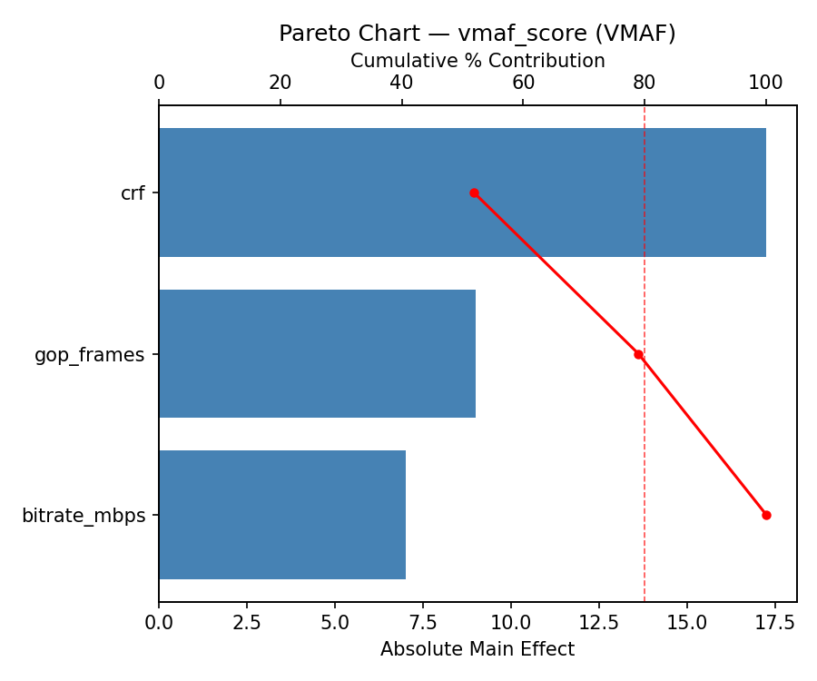
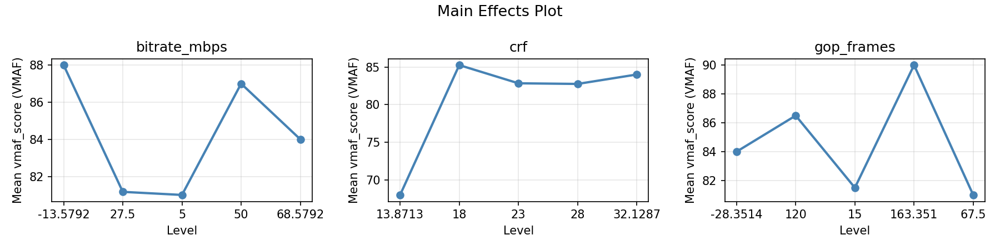
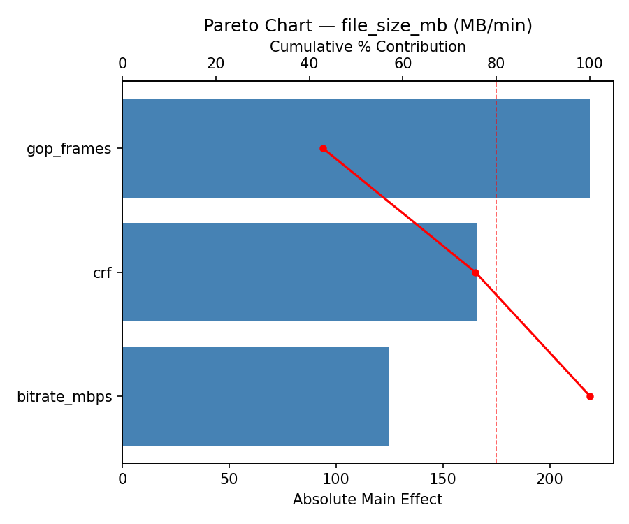
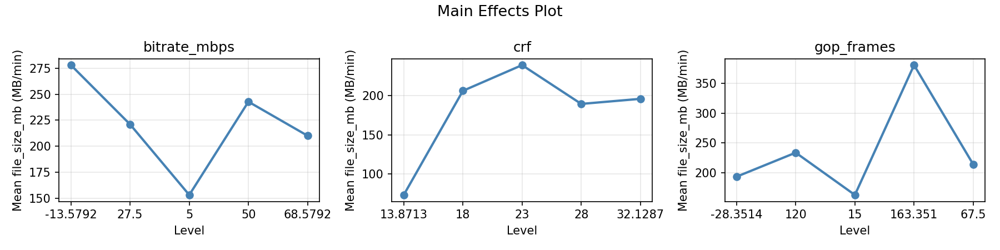
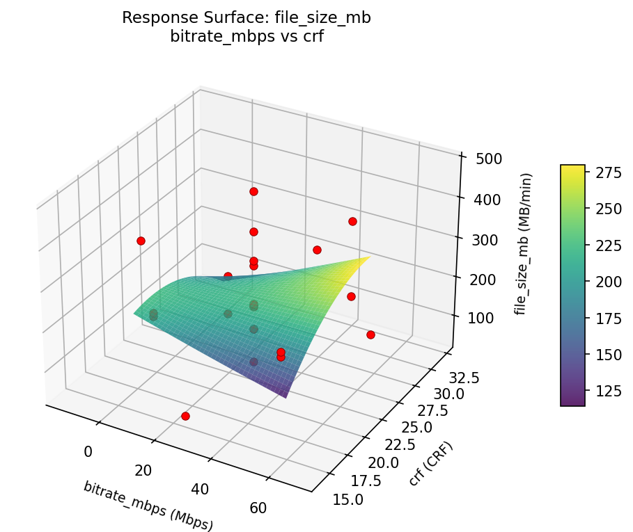
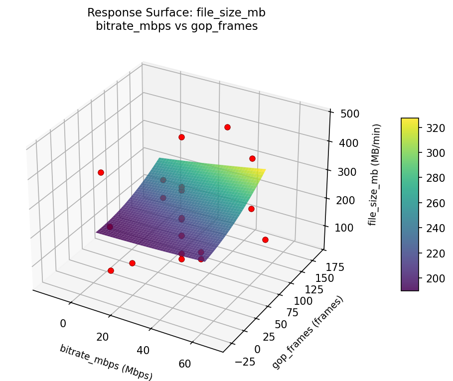
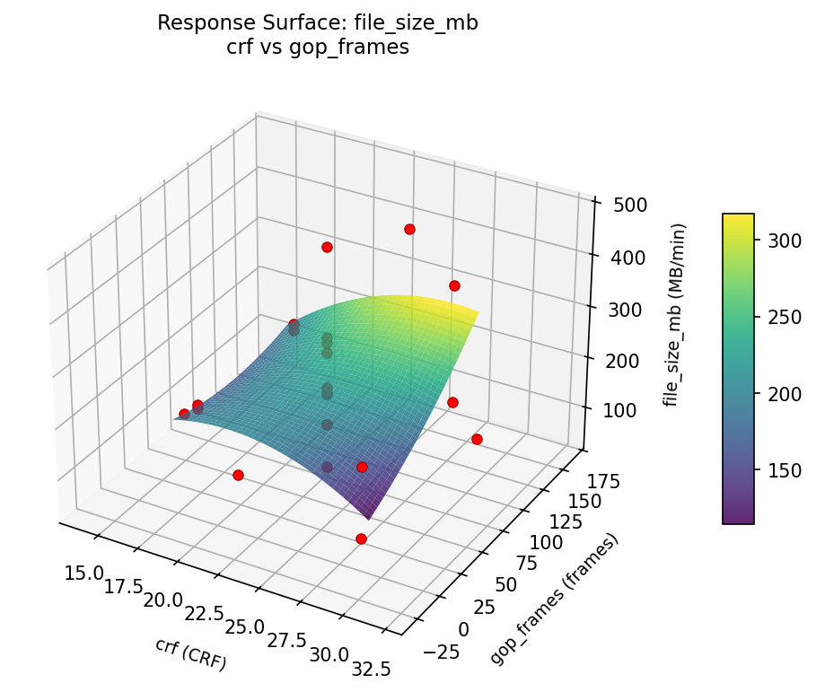
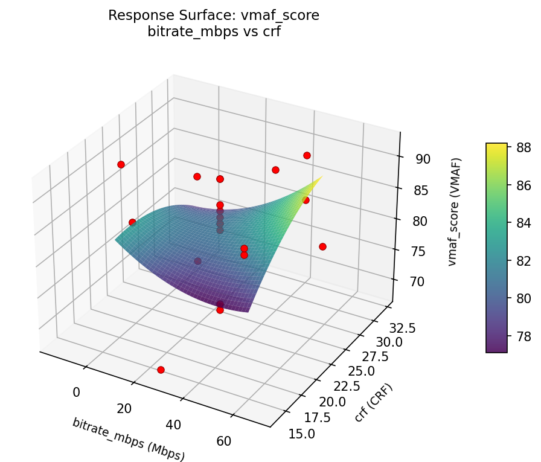
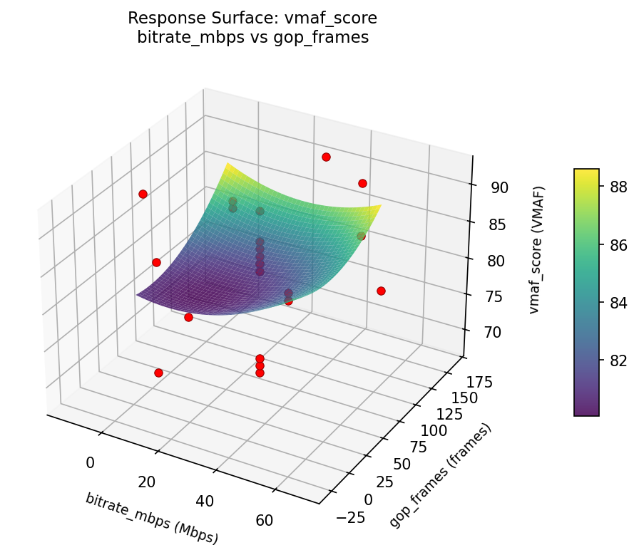
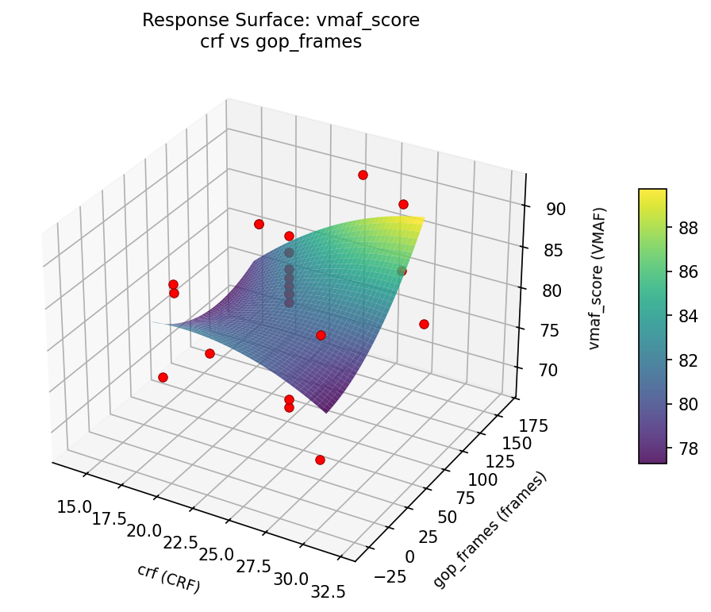

Experimental Setup
Factors
| Factor | Low | High | Unit |
|---|
bitrate_mbps | 5 | 50 | Mbps |
crf | 18 | 28 | CRF |
gop_frames | 15 | 120 | frames |
Fixed: codec = h265, resolution = 4K
Responses
| Response | Direction | Unit |
|---|
vmaf_score | ↑ maximize | VMAF |
file_size_mb | ↓ minimize | MB/min |
Configuration
{
"metadata": {
"name": "Video Encoding Quality",
"description": "Central composite design to maximize visual quality and minimize file size by tuning bitrate, CRF value, and GOP length"
},
"factors": [
{
"name": "bitrate_mbps",
"levels": [
"5",
"50"
],
"type": "continuous",
"unit": "Mbps"
},
{
"name": "crf",
"levels": [
"18",
"28"
],
"type": "continuous",
"unit": "CRF"
},
{
"name": "gop_frames",
"levels": [
"15",
"120"
],
"type": "continuous",
"unit": "frames"
}
],
"fixed_factors": {
"codec": "h265",
"resolution": "4K"
},
"responses": [
{
"name": "vmaf_score",
"optimize": "maximize",
"unit": "VMAF"
},
{
"name": "file_size_mb",
"optimize": "minimize",
"unit": "MB/min"
}
],
"settings": {
"operation": "central_composite",
"test_script": "use_cases/156_video_encoding/sim.sh"
}
}
Experimental Matrix
The Central Composite Design produces 22 runs. Each row is one experiment with specific factor settings.
| Run | bitrate_mbps | crf | gop_frames |
|---|
| 1 | 27.5 | 23 | 67.5 |
| 2 | 50 | 18 | 120 |
| 3 | 5 | 28 | 15 |
| 4 | 27.5 | 32.1287 | 67.5 |
| 5 | 27.5 | 23 | 67.5 |
| 6 | -13.5792 | 23 | 67.5 |
| 7 | 27.5 | 23 | -28.3514 |
| 8 | 27.5 | 23 | 67.5 |
| 9 | 50 | 28 | 15 |
| 10 | 68.5792 | 23 | 67.5 |
| 11 | 27.5 | 23 | 67.5 |
| 12 | 27.5 | 13.8713 | 67.5 |
| 13 | 27.5 | 23 | 67.5 |
| 14 | 5 | 18 | 120 |
| 15 | 27.5 | 23 | 67.5 |
| 16 | 50 | 18 | 15 |
| 17 | 27.5 | 23 | 163.351 |
| 18 | 50 | 28 | 120 |
| 19 | 27.5 | 23 | 67.5 |
| 20 | 5 | 18 | 15 |
| 21 | 5 | 28 | 120 |
| 22 | 27.5 | 23 | 67.5 |
Step-by-Step Workflow
1
Preview the design
$ python doe.py info --config use_cases/156_video_encoding/config.json
2
Generate the runner script
$ python doe.py generate --config use_cases/156_video_encoding/config.json \
--output use_cases/156_video_encoding/results/run.sh --seed 42
3
Execute the experiments
$ bash use_cases/156_video_encoding/results/run.sh
4
Analyze results
$ python doe.py analyze --config use_cases/156_video_encoding/config.json
5
Get optimization recommendations
$ python doe.py optimize --config use_cases/156_video_encoding/config.json
6
Generate the HTML report
$ python doe.py report --config use_cases/156_video_encoding/config.json \
--output use_cases/156_video_encoding/results/report.html
Features Exercised
| Feature | Value |
|---|
| Design type | central_composite |
| Factor types | continuous (all 3) |
| Arg style | double-dash |
| Responses | 2 (vmaf_score ↑, file_size_mb ↓) |
| Total runs | 22 |
Analysis Results
Generated from actual experiment runs using the DOE Helper Tool.
Response: vmaf_score
Top factors: crf (51.9%), gop_frames (27.1%), bitrate_mbps (21.1%).
Pareto Chart

Main Effects Plot

Response: file_size_mb
Top factors: gop_frames (42.9%), crf (32.6%), bitrate_mbps (24.5%).
Pareto Chart

Main Effects Plot

Response Surface Plots
3D surfaces fitted with quadratic RSM. Red dots are observed data points.
file size mb bitrate mbps vs crf

file size mb bitrate mbps vs gop frames

file size mb crf vs gop frames

vmaf score bitrate mbps vs crf

vmaf score bitrate mbps vs gop frames

vmaf score crf vs gop frames

Full Analysis Output
RSM surface: rsm_vmaf_score_bitrate_mbps_vs_crf.png
RSM surface: rsm_vmaf_score_bitrate_mbps_vs_gop_frames.png
RSM surface: rsm_vmaf_score_crf_vs_gop_frames.png
RSM surface: rsm_file_size_mb_bitrate_mbps_vs_crf.png
RSM surface: rsm_file_size_mb_bitrate_mbps_vs_gop_frames.png
RSM surface: rsm_file_size_mb_crf_vs_gop_frames.png
=== Main Effects: vmaf_score ===
Factor Effect Std Error % Contribution
--------------------------------------------------------------
crf 17.2500 1.4735 51.9%
gop_frames 9.0000 1.4735 27.1%
bitrate_mbps 7.0000 1.4735 21.1%
=== Summary Statistics: vmaf_score ===
bitrate_mbps:
Level N Mean Std Min Max
------------------------------------------------------------
-13.5792 1 88.0000 0.0000 88.0000 88.0000
27.5 12 81.1667 7.7675 68.0000 90.0000
5 4 81.0000 7.3485 70.0000 85.0000
50 4 87.0000 3.3665 85.0000 92.0000
68.5792 1 84.0000 0.0000 84.0000 84.0000
crf:
Level N Mean Std Min Max
------------------------------------------------------------
13.8713 1 68.0000 0.0000 68.0000 68.0000
18 4 85.2500 0.5000 85.0000 86.0000
23 12 82.8333 6.7667 69.0000 90.0000
28 4 82.7500 9.2150 70.0000 92.0000
32.1287 1 84.0000 0.0000 84.0000 84.0000
gop_frames:
Level N Mean Std Min Max
------------------------------------------------------------
-28.3514 1 84.0000 0.0000 84.0000 84.0000
120 4 86.5000 3.6968 84.0000 92.0000
15 4 81.5000 7.6811 70.0000 86.0000
163.351 1 90.0000 0.0000 90.0000 90.0000
67.5 12 81.0000 7.5799 68.0000 90.0000
=== Main Effects: file_size_mb ===
Factor Effect Std Error % Contribution
--------------------------------------------------------------
gop_frames 218.7500 22.5629 42.9%
crf 166.1667 22.5629 32.6%
bitrate_mbps 125.0000 22.5629 24.5%
=== Summary Statistics: file_size_mb ===
bitrate_mbps:
Level N Mean Std Min Max
------------------------------------------------------------
-13.5792 1 278.0000 0.0000 278.0000 278.0000
27.5 12 220.9167 124.9047 53.0000 478.0000
5 4 153.0000 75.5690 48.0000 212.0000
50 4 242.7500 88.6656 187.0000 375.0000
68.5792 1 210.0000 0.0000 210.0000 210.0000
crf:
Level N Mean Std Min Max
------------------------------------------------------------
13.8713 1 73.0000 0.0000 73.0000 73.0000
18 4 206.2500 5.9090 199.0000 212.0000
23 12 239.1667 116.1870 53.0000 478.0000
28 4 189.5000 136.8223 48.0000 375.0000
32.1287 1 196.0000 0.0000 196.0000 196.0000
gop_frames:
Level N Mean Std Min Max
------------------------------------------------------------
-28.3514 1 193.0000 0.0000 193.0000 193.0000
120 4 233.5000 98.2938 148.0000 375.0000
15 4 162.2500 76.7870 48.0000 210.0000
163.351 1 381.0000 0.0000 381.0000 381.0000
67.5 12 213.7500 115.9813 53.0000 478.0000
Pareto chart (vmaf_score): use_cases/156_video_encoding/results/analysis/pareto_vmaf_score.png
Pareto chart (file_size_mb): use_cases/156_video_encoding/results/analysis/pareto_file_size_mb.png
Main effects (vmaf_score): use_cases/156_video_encoding/results/analysis/main_effects_vmaf_score.png
Main effects (file_size_mb): use_cases/156_video_encoding/results/analysis/main_effects_file_size_mb.png
Optimization Recommendations
=== Optimization: vmaf_score ===
Direction: maximize
Best observed run: #2
bitrate_mbps = 27.5
crf = 23
gop_frames = 163.351
Value: 92.0
RSM Model (linear, R² = 0.1822, Adj R² = 0.0459):
Coefficients:
intercept +82.6364
bitrate_mbps +1.4819
crf +3.1477
gop_frames +0.5986
RSM Model (quadratic, R² = 0.3675, Adj R² = -0.1068):
Coefficients:
intercept +81.4258
bitrate_mbps +1.4819
crf +3.1477
gop_frames +0.5987
bitrate_mbps*crf +0.5000
bitrate_mbps*gop_frames -0.7500
crf*gop_frames -0.2500
bitrate_mbps^2 -0.8447
crf^2 -0.0947
gop_frames^2 +2.7553
Curvature analysis:
gop_frames coef=+2.7553 convex (has a minimum)
bitrate_mbps coef=-0.8447 concave (has a maximum)
crf coef=-0.0947 negligible curvature
Notable interactions:
bitrate_mbps*gop_frames coef=-0.7500 (antagonistic)
bitrate_mbps*crf coef=+0.5000 (synergistic)
Predicted optimum (from linear model):
bitrate_mbps = 27.5
crf = 32.1287
gop_frames = 67.5
Predicted value: 88.3833
Model quality: Weak fit — consider adding center points or using a different design.
Factor importance:
1. crf (effect: 22.0, contribution: 44.7%)
2. bitrate_mbps (effect: 15.2, contribution: 31.0%)
3. gop_frames (effect: 11.9, contribution: 24.2%)
=== Optimization: file_size_mb ===
Direction: minimize
Best observed run: #21
bitrate_mbps = 27.5
crf = 23
gop_frames = 67.5
Value: 48.0
RSM Model (linear, R² = 0.2304, Adj R² = 0.1021):
Coefficients:
intercept +214.6364
bitrate_mbps +22.5929
crf +49.8699
gop_frames +26.3970
RSM Model (quadratic, R² = 0.4458, Adj R² = 0.0301):
Coefficients:
intercept +203.9785
bitrate_mbps +22.5929
crf +49.8699
gop_frames +26.3971
bitrate_mbps*crf +0.5000
bitrate_mbps*gop_frames +1.0000
crf*gop_frames -19.2500
bitrate_mbps^2 -31.8711
crf^2 +22.2790
gop_frames^2 +25.5790
Curvature analysis:
bitrate_mbps coef=-31.8711 concave (has a maximum)
gop_frames coef=+25.5790 convex (has a minimum)
crf coef=+22.2790 convex (has a minimum)
Notable interactions:
crf*gop_frames coef=-19.2500 (antagonistic)
bitrate_mbps*gop_frames coef=+1.0000 (synergistic)
bitrate_mbps*crf coef=+0.5000 (synergistic)
Predicted optimum (from linear model):
bitrate_mbps = 50
crf = 28
gop_frames = 120
Predicted value: 313.4962
Model quality: Weak fit — consider adding center points or using a different design.
Factor importance:
1. crf (effect: 405.0, contribution: 52.3%)
2. bitrate_mbps (effect: 191.5, contribution: 24.7%)
3. gop_frames (effect: 177.4, contribution: 22.9%)